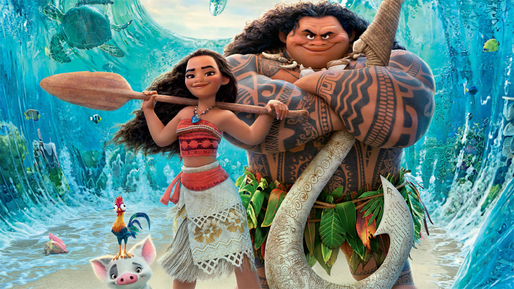

About Moana
Moana is the vibrant, tenacious and optimistic daughter of the Chief of Motunui, thriving on her island but drawn to the ocean. When her island is threatened by a dark force, Moana sets sail outside the reef and her comfort zone to right a wrong, save her people, and find the answers she's been searching for her whole life.
Moana and her friends
Moana's Characteristics
Moana's friends
Moana has some awesome friends who help her on the journey of her lifetime. Click on the links below to find more about them: